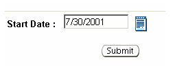

Previous Topic
Next Topic
| Workflow |
Previous Topic |
Next Topic |
The third-level menu, Change Start Date, of the Task Profile page contains the Task Information, Workflow Information and a date field that allows you to alter the Start Date for the selected task. A Start Date pick list appears on the right side of the page which allows you to select a different Start Date that is either in the in the past or the future.
Enter a new Start Date
and click to
finalize the change.
to
finalize the change.
Copyright © 1996, 2004, Oracle. All rights reserved.